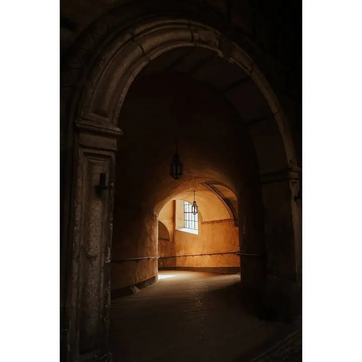
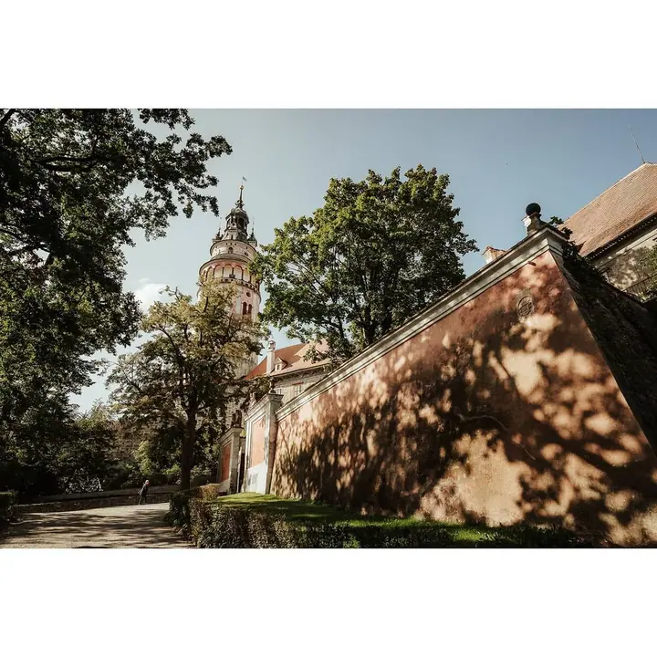
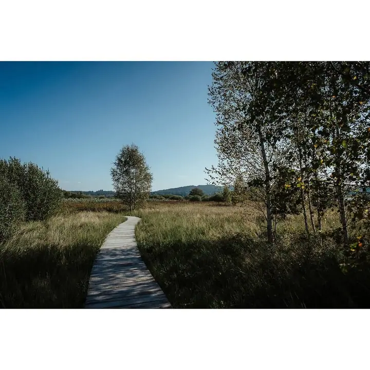
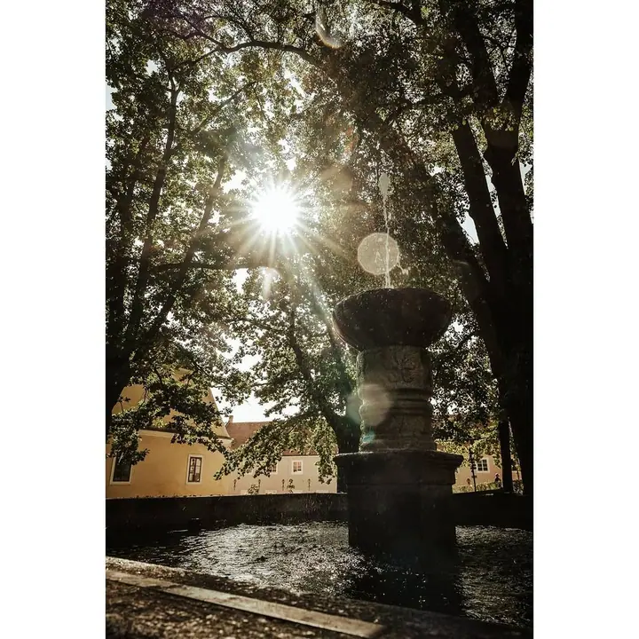
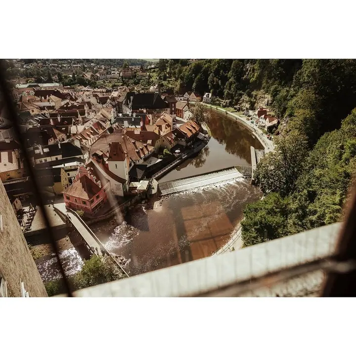
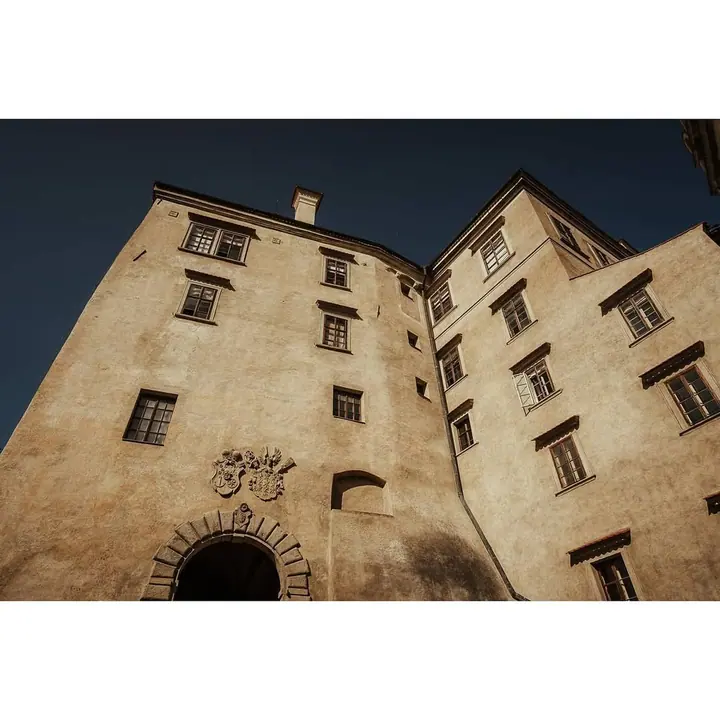
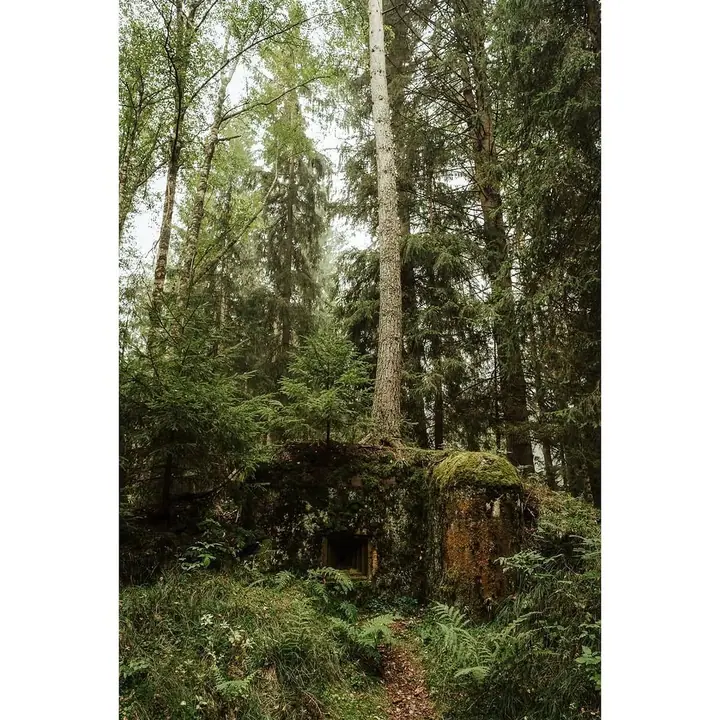
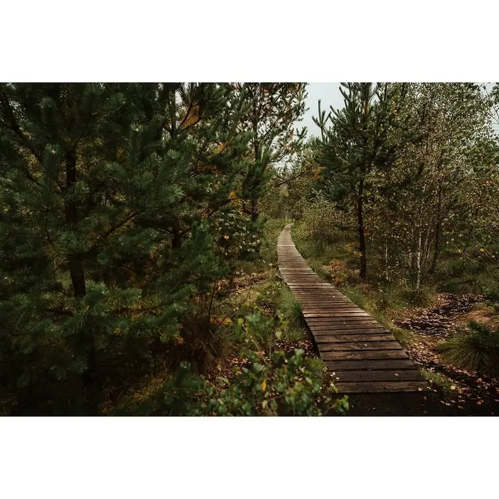
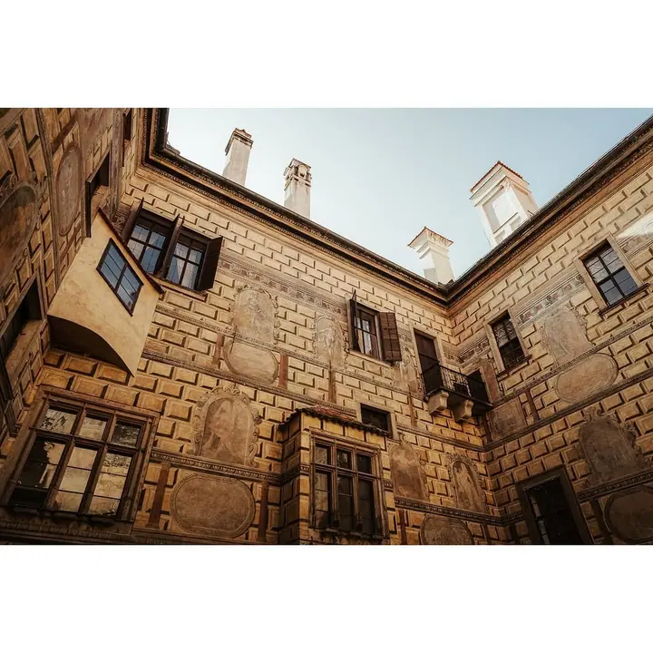

Ondřej Koudela
Svatby, páry a portréty z Třebíče
Zeptat se na termín →(01) Ahoj
Jmenuji se Ondřej Koudela a jsem fotograf při zaměstnání v Třebíči. Fotím svatby, páry, maternity, portréty i produkty. A když zrovna nefotím lidi, beru foťák na cesty a hledám světlo ve starých městech a v přírodě.
834lidí sleduje mou práci na Instagramu
330příspěvků s fotkami a příběhy
(02) Co fotím
Focení, které má příběh
Co nabízím
-
01
Svatby
Svatby jsou na prvním místě mé nabídky. Fotím váš den v klidu a nenápadně, ať se můžete věnovat sobě a svým hostům.
↗ -
02
Párové focení
Procházka ve dvou, kde nemusíte nic hrát. Místo vybereme spolu, klidně staré uličky nebo cestu přírodou.
↗ -
03
Maternity
Těhotenské focení v době, kdy se na miminko teprve těšíte. V pohodovém tempu a s ohledem na to, jak se zrovna cítíte.
↗ -
04
Portréty
Portréty pro vás osobně i pro vaši práci. Hledám světlo a prostředí, ve kterém budete působit přirozeně.
↗
(04) Postup
Jak to probíhá
Od první zprávy po hotovou galerii.
-
1
Krok 1 z 4
Ozvěte se
Napište mi e-mail, co byste si představovali, kdy a kde. Termín si můžete zarezervovat i online.
-
2
Krok 2 z 4
Domluvíme se
Probereme vaše představy, místo i časový plán, aby vám bylo jasné, co vás čeká.
-
3
Krok 3 z 4
Focení
Fotíme v klidu a bez spěchu. Nemusíte umět pózovat, s tím vším vám pomůžu.
-
4
Krok 4 z 4
Výběr a úprava
Fotky pečlivě vyberu, upravím a pošlu vám je v podobě, kterou si spolu domluvíme.
Hledám světlo, které dělá místo výjimečným
(05) Za objektivem
Ahoj, jsem Ondřej
Jsem fotograf při zaměstnání. Focení se věnuji vedle své práce, a proto si každou zakázku pečlivě rozmyslím a dávám jí čas, který si zaslouží.
Nejvíc mě baví svatby a páry, ale rád fotím i budoucí maminky, portréty a produkty. Ke všemu přistupuji stejně: v klidu, bez spěchu a s důrazem na světlo a prostředí, ve kterém fotíme.
Fotografie mě provází i na cestách. Rád se toulám starými městy, zámky i lesy a právě tam se učím vidět světlo, stíny a detaily, které pak hledám i při focení lidí.
- 01Fotím při zaměstnání
- 02Žiju a fotím v Třebíči
- 03Rád cestuji s foťákem
- 04Fotím i produkty
Ondřej
Ondřej Koudela · Svatební a portrétní fotograf
Jak si mohu focení zarezervovat?
Napište mi na e-mail koudelao@gmail.com nebo si termín vyberte přes online rezervaci na mém webu.
Kde fotíte?
Fotím hlavně v Třebíči a okolí. Pokud máte na mysli jiné místo, napište mi a domluvíme se.
Nikdy jsme se nefotili, nevadí to?
Vůbec ne. Většina lidí stojí před foťákem poprvé. Budu vás navádět a focení vezmeme jako společnou procházku.
Kdy je nejlepší čas na těhotenské focení?
Obvykle když už je bříško hezky vidět, ale vy se ještě cítíte dobře. Přesný termín spolu naladíme podle vás.
(07) Kontakt
Pojďme fotit spolu
Napište pár vět o tom, co si představujete, a termín, který se vám hodí.
koudelao@gmail.com- Instagram @ondrej_koudela
- Třebíč